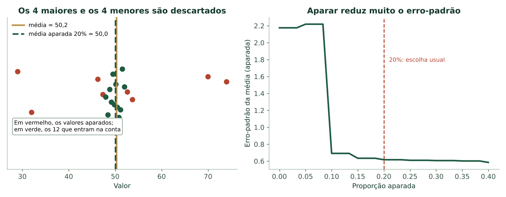
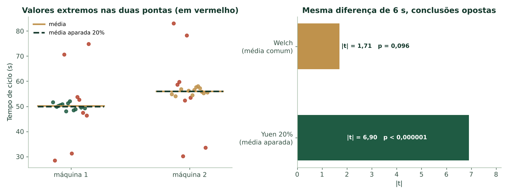

Teste de Yuen (grupos independentes)
Compara as médias aparadas de dois grupos independentes, reduzindo a influência de valores extremos.
Comece por aqui
Medições reais trazem valores atípicos: uma parada de máquina, uma leitura com falha, um registro digitado errado. Esses pontos quase não afetam a posição central dos dados, mas inflam o desvio-padrão e, com ele, o erro-padrão da média. O resultado é um teste t que não detecta diferenças reais. O teste de Yuen contorna isso trocando a média pela média aparada.
A média aparada de 20% descarta os 20% menores e os 20% maiores valores e calcula a média dos que sobraram. Com \(n=20\), são 4 de cada ponta, restando 12. A mediana é o caso extremo (aparagem de 50%), e a média comum é a aparagem de 0%: a média aparada fica entre as duas, combinando robustez com boa eficiência.
O que é o teste
O teste segue a mesma lógica do teste de Welch: uma diferença dividida por seu erro-padrão. Duas coisas mudam. A quantidade comparada passa a ser a média aparada, e a variância usada passa a ser a variância winsorizada: em vez de descartar as caudas, elas são substituídas pelo valor que sobrou na borda, o que preserva o tamanho da amostra no cálculo.

A escolha de 20% é a mais recomendada na literatura robusta (WILCOX, 2017): preserva boa eficiência sob normalidade e protege bem contra caudas pesadas. A proporção deve ser definida antes de ver os dados, como qualquer outro detalhe do procedimento.
Pressupostos e como verificá-los
| Pressuposto | Por que importa | Como verificar |
|---|---|---|
| Grupos independentes | Pressuposto central. | Delineamento; para medidas pareadas, use o Yuen pareado. |
| Variável quantitativa contínua | A aparagem supõe uma ordem com significado métrico. | Natureza da variável. |
| Normalidade | Não é exigida: é a razão de ser do método. | — |
| Variâncias iguais | Não é exigida: o teste usa a estrutura de Welch. | — |
| Amostra suficiente após a aparagem | Com n = 10 e 20% de aparagem restam 6 observações por grupo. | n × (1 − 2·tr); com n pequeno, prefira a versão por bootstrap. |
| Assimetria não extrema | Com assimetria muito forte, a média aparada ainda é afetada. | Histograma; compare com a mediana. |
Hipóteses e estatística de teste
Em que:
- \(\gamma\)
- proporção aparada em cada ponta (0,2 é o padrão)
- \(g_i\)
- número de valores descartados em cada ponta do grupo i
- \(h_i\)
- número de observações que sobram: \(n_i-2g_i\)
- \(\bar x_{ti}\)
- média aparada do grupo i
- \(s_{wi}^2\)
- variância winsorizada: as caudas são substituídas pelos valores da borda e a variância é calculada sobre os \(n_i\) valores resultantes
- \(d_i\)
- variância estimada da média aparada do grupo i
- \(\nu\)
- graus de liberdade, no mesmo espírito da fórmula de Welch
Exemplo numérico, passo a passo
Dados do exemplo: \(n_1=n_2=20\) e \(\gamma=0{,}2\), logo \(g=4\) e \(h=12\) em cada grupo.
| Passo | Máquina 1 | Máquina 2 |
|---|---|---|
| Média comum | 50,250 s | 56,040 s |
| Média aparada 20% | 50,000 s | 56,000 s |
| Variância comum | 100,89 | 129,35 |
| Variância winsorizada | 2,624 | 2,624 |
| d = (n−1)·s²w / [h(h−1)] | 19 × 2,624 / 132 = 0,3777 | 0,3777 |
Erro-padrão: \(\sqrt{0{,}3777+0{,}3777}=0{,}8692\).
\(t_Y=(50{,}000-56{,}000)/0{,}8692=-6{,}9031\), com \(\nu=22{,}0\) ⇒ valor-p \(=6{,}2\times10^{-7}\).
IC de 95% para a diferença: \([-7{,}80;\ -4{,}20]\) s.
Para comparação, o teste de Welch sobre as médias comuns dá \(t=-1{,}71\) e \(p=0{,}096\): a mesma diferença de aproximadamente 6 s, mas sem significância. A razão está no denominador: a variância winsorizada é 2,6, contra variâncias comuns de 101 e 129.
Propriedades
- Com \(\gamma=0\), o teste se reduz exatamente ao teste de Welch.
- A média aparada é um estimador robusto: seu ponto de ruptura é \(\gamma\), ou seja, até 20% de contaminação em cada ponta não a desestabiliza.
- Sob normalidade, a perda de eficiência em relação à média comum é pequena (cerca de 10% com 20% de aparagem).
- Com caudas pesadas, o ganho de poder pode ser enorme, como no exemplo desta ficha.
- O teste compara médias aparadas populacionais, que coincidem com as médias quando as distribuições são simétricas.
- Para amostras pequenas, a versão por bootstrap (
yuenbt) tem melhor controle do erro tipo I.
Como interpretar os resultados
| Elemento | O que informa | Cuidado |
|---|---|---|
| Diferença entre médias aparadas | O efeito, na unidade original. | Refere-se à parte central das distribuições. |
| IC da diferença | Magnitude plausível. | Costuma ser bem mais estreito que o do teste t comum. |
| Valor-p | Evidência contra a igualdade. | Não é comparável diretamente com o do teste t: as quantidades testadas são diferentes. |
| Proporção aparada | Define o que foi comparado. | Informe sempre; 20% é o padrão. |
| h | Observações efetivamente usadas. | Com h pequeno, prefira a versão por bootstrap. |
O teste de Yuen não é “uma versão melhor do teste t para os mesmos parâmetros”: ele compara médias aparadas. Em distribuições simétricas, média e média aparada estimam a mesma coisa; em distribuições assimétricas, não. Declare qual quantidade está sendo comparada.
Como executar no R e em Python
Onde executar o código em Python
Não é preciso instalar nada: o Google Colab é um computador na nuvem, gratuito, que executa Python pelo navegador e já traz as bibliotecas usadas aqui (numpy, scipy e matplotlib).
yuen() pertence ao pacote WRS2 (MAIR; WILCOX, 2020). Instale uma única vez com install.packages("WRS2"). A proporção aparada vai em tr= (padrão 0,2). yuenbt() faz a versão por bootstrap, e yuen.effect.ci() devolve o tamanho de efeito robusto.
# install.packages("WRS2")
library(WRS2)
yuen(tempo ~ maquina, data = dados, tr = 0.2)
Exemplo de aplicação
Contexto dos dados
Duas máquinas tiveram o tempo de ciclo medido 20 vezes cada. O processo tem paradas ocasionais e leituras com falha de registro, que produzem valores muito acima e muito abaixo do normal nas duas máquinas. A pergunta é se o tempo de ciclo típico difere entre elas. Os dados são fictícios, criados para esta ficha.
Código em R
# Teste de Yuen para médias aparadas: exemplo completo ----
# Pacote: WRS2. Instale uma única vez: install.packages("WRS2")
library(WRS2)
# 1. Dados: tempo de ciclo (s) de duas máquinas, 20 medições cada (dados fictícios)
maquina1 <- c(51.6, 49.5, 52.6, 50.8, 49.8, 51.2, 28.4, 48.8, 50.2, 52.0,
48.0, 53.7, 46.3, 74.8, 48.4, 31.2, 49.2, 47.4, 50.5, 70.6)
maquina2 <- c(30.1, 55.8, 57.2, 33.5, 52.3, 56.5, 78.2, 54.0, 54.4, 56.2,
58.6, 55.5, 55.2, 56.8, 53.4, 57.6, 59.7, 54.8, 83.0, 58.0)
dados <- data.frame(tempo = c(maquina1, maquina2),
maquina = factor(rep(c("M1", "M2"), each = 20)))
rbind(media = tapply(dados$tempo, dados$maquina, mean),
aparada20 = tapply(dados$tempo, dados$maquina, mean, trim = 0.2),
mediana = tapply(dados$tempo, dados$maquina, median),
dp = tapply(dados$tempo, dados$maquina, sd))
# 2. Diagnóstico: caudas pesadas nos dois grupos
par(mfrow = c(1, 2))
boxplot(tempo ~ maquina, data = dados, col = "gray85", ylab = "Tempo de ciclo (s)")
qqnorm(maquina1, pch = 19); qqline(maquina1, col = "red")
par(mfrow = c(1, 1))
tapply(dados$tempo, dados$maquina, function(v) shapiro.test(v)$p.value)
# 3. Teste t de Welch (usa a média e o desvio-padrão completos)
t.test(tempo ~ maquina, data = dados)
# 4. Teste de Yuen com 20% de aparagem
yuen(tempo ~ maquina, data = dados, tr = 0.2)
# 5. Intervalo de confiança e tamanho do efeito robusto
yuen(tempo ~ maquina, data = dados, tr = 0.2)$conf.int
yuen.effect.ci(tempo ~ maquina, data = dados, tr = 0.2)
# 6. Efeito da proporção de aparagem
for (tr in c(0.05, 0.10, 0.20, 0.25)) {
r <- yuen(tempo ~ maquina, data = dados, tr = tr)
cat("aparagem", tr, ": t =", round(r$test, 4), " gl =", round(r$df, 3),
" p =", format.pval(r$p.value, digits = 3), "\n")
}
# 7. Versão por bootstrap, recomendada para amostras pequenas
set.seed(2026)
yuenbt(tempo ~ maquina, data = dados, tr = 0.2, nboot = 2000)
# 8. Alternativa por postos
wilcox.test(tempo ~ maquina, data = dados)
A mesma análise em Python, com os resultados
Cole o código em um notebook do Google Colab ↗ e execute com Shift+Enter. Os valores abaixo são a saída desse código.
# Bibliotecas: numpy, scipy e matplotlib (já instaladas no Google Colab)
import numpy as np
from scipy import stats
import matplotlib.pyplot as plt
def var_winsorizada(x, tr=0.2):
"""Variância winsorizada: substitui as caudas pelos valores que sobraram na borda."""
n = len(x); g = int(np.floor(tr * n)); xs = np.sort(x)
w = np.r_[np.repeat(xs[g], g + 1), xs[g+1:n-g-1], np.repeat(xs[n-g-1], g + 1)]
return w.var(ddof=1), g
def yuen(x, y, tr=0.2):
"""Teste de Yuen: compara médias aparadas de dois grupos independentes."""
nx, ny = len(x), len(y)
sx, gx = var_winsorizada(x, tr); sy, gy = var_winsorizada(y, tr)
hx, hy = nx - 2 * gx, ny - 2 * gy # observações efetivamente usadas
dx = (nx - 1) * sx / (hx * (hx - 1)); dy = (ny - 1) * sy / (hy * (hy - 1))
mx, my = stats.trim_mean(x, tr), stats.trim_mean(y, tr)
ep = np.sqrt(dx + dy); t = (mx - my) / ep
gl = (dx + dy)**2 / (dx**2 / (hx - 1) + dy**2 / (hy - 1))
return dict(t=t, gl=gl, p=2 * stats.t.sf(abs(t), gl), mx=mx, my=my, ep=ep,
hx=hx, hy=hy, gx=gx, gy=gy, sx=sx, sy=sy)
# 1. Dados: tempo de ciclo (segundos) de duas máquinas, 20 medições cada (dados fictícios).
# Há paradas ocasionais e leituras falhas, que produzem valores extremos nos dois sentidos.
maquina1 = np.array([51.6, 49.5, 52.6, 50.8, 49.8, 51.2, 28.4, 48.8, 50.2, 52.0,
48.0, 53.7, 46.3, 74.8, 48.4, 31.2, 49.2, 47.4, 50.5, 70.6])
maquina2 = np.array([30.1, 55.8, 57.2, 33.5, 52.3, 56.5, 78.2, 54.0, 54.4, 56.2,
58.6, 55.5, 55.2, 56.8, 53.4, 57.6, 59.7, 54.8, 83.0, 58.0])
for nome, g in [("máquina 1", maquina1), ("máquina 2", maquina2)]:
print(f"{nome}: n = {len(g)} | média = {g.mean():.3f} | DP = {g.std(ddof=1):.3f} "
f"| mediana = {np.median(g):.2f} | média aparada 20% = {stats.trim_mean(g, 0.2):.3f}")
# 2. O problema: caudas pesadas inflam o desvio-padrão
for nome, g in [("máquina 1", maquina1), ("máquina 2", maquina2)]:
W, pw = stats.shapiro(g)
print(f"Shapiro-Wilk ({nome}): W = {W:.4f}, p-valor = {pw:.5f} | amplitude = {g.min()} a {g.max()}")
# 3. Teste t de Welch (usa a média e o desvio-padrão completos)
tw = stats.ttest_ind(maquina1, maquina2, equal_var=False)
print(f"\nWelch: t = {tw.statistic:.4f}, gl = {tw.df:.3f}, p-valor = {tw.pvalue:.4f}")
# 4. Teste de Yuen com 20% de aparagem
r = yuen(maquina1, maquina2, tr=0.2)
print(f"\nAparagem de 20%: {r['gx']} valores descartados em cada ponta, restando h = {r['hx']} e {r['hy']}")
print(f"Médias aparadas: {r['mx']:.4f} e {r['my']:.4f} | diferença = {r['mx'] - r['my']:.4f} s")
print(f"Variâncias winsorizadas: {r['sx']:.4f} e {r['sy']:.4f} (contra {maquina1.var(ddof=1):.2f} e {maquina2.var(ddof=1):.2f} nas variâncias comuns)")
print(f"Erro-padrão = {r['ep']:.4f} | t = {r['t']:.4f} | gl = {r['gl']:.3f} | p-valor = {r['p']:.3e}")
# 5. Intervalo de confiança de 95% para a diferença das médias aparadas
tc = stats.t.ppf(0.975, r["gl"]); ic = (r["mx"] - r["my"]) + np.array([-1, 1]) * tc * r["ep"]
print(f"IC 95% = [{ic[0]:.4f}; {ic[1]:.4f}] s")
# 6. Efeito da proporção de aparagem
print("\nAparagem médias aparadas t gl p-valor")
for tr in [0.0, 0.1, 0.2, 0.25]:
rr = yuen(maquina1, maquina2, tr=tr) if tr > 0 else None
if tr == 0:
print(f"{tr:>7.0%} {maquina1.mean():.3f} e {maquina2.mean():.3f} {tw.statistic:>7.4f} {tw.df:>7.3f} {tw.pvalue:.5f}")
else:
print(f"{tr:>7.0%} {rr['mx']:.3f} e {rr['my']:.3f} {rr['t']:>7.4f} {rr['gl']:>7.3f} {rr['p']:.3e}")
# 7. Comparação com outras alternativas
print(f"\nMann-Whitney: p-valor = {stats.mannwhitneyu(maquina1, maquina2).pvalue:.5f}")
print(f"Diferença entre as medianas: {np.median(maquina1) - np.median(maquina2):.3f} s")
# 8. Gráficos
fig, ax = plt.subplots(1, 2, figsize=(11, 4))
ax[0].boxplot([maquina1, maquina2]); ax[0].set_xticks([1, 2]); ax[0].set_xticklabels(["máquina 1", "máquina 2"])
for j, g in enumerate([maquina1, maquina2], 1): ax[0].scatter(np.full(len(g), j), g, alpha=0.6)
ax[0].set_ylabel("Tempo de ciclo (s)")
ax[1].bar([0, 1], [maquina1.mean(), maquina2.mean()], width=0.35, label="média")
ax[1].bar([0.4, 1.4], [stats.trim_mean(maquina1, 0.2), stats.trim_mean(maquina2, 0.2)], width=0.35, label="média aparada 20%")
ax[1].set_xticks([0.2, 1.2]); ax[1].set_xticklabels(["máquina 1", "máquina 2"]); ax[1].set_ylabel("Tempo (s)"); ax[1].legend()
plt.show()
Resultados da execução
máquina 1: n = 20 | média = 50.250 | DP = 10.044 | mediana = 50.00 | média aparada 20% = 50.000
máquina 2: n = 20 | média = 56.040 | DP = 11.373 | mediana = 56.00 | média aparada 20% = 56.000
Shapiro-Wilk (máquina 1): W = 0.7985, p-valor = 0.00082 | amplitude = 28.4 a 74.8
Shapiro-Wilk (máquina 2): W = 0.7844, p-valor = 0.00051 | amplitude = 30.1 a 83.0
Welch: t = -1.7065, gl = 37.428, p-valor = 0.0962
Aparagem de 20%: 4 valores descartados em cada ponta, restando h = 12 e 12
Médias aparadas: 50.0000 e 56.0000 | diferença = -6.0000 s
Variâncias winsorizadas: 2.6242 e 2.6242 (contra 100.89 e 129.35 nas variâncias comuns)
Erro-padrão = 0.8692 | t = -6.9031 | gl = 22.000 | p-valor = 6.230e-07
IC 95% = [-7.8025; -4.1975] s
Aparagem médias aparadas t gl p-valor
0% 50.250 e 56.040 -1.7065 37.428 0.09620
10% 50.000 e 56.000 -6.1689 30.000 8.705e-07
20% 50.000 e 56.000 -6.9031 22.000 6.230e-07
25% 50.000 e 56.000 -6.7591 18.000 2.473e-06
Mann-Whitney: p-valor = 0.00056
Diferença entre as medianas: -6.000 s
| Elemento | Máquina 1 | Máquina 2 |
|---|---|---|
| n | 20 | 20 |
| Média | 50,250 s | 56,040 s |
| Média aparada 20% | 50,000 s | 56,000 s |
| Mediana | 50,00 s | 56,00 s |
| Desvio-padrão | 10,044 | 11,373 |
| Amplitude | 28,4 a 74,8 | 30,1 a 83,0 |
| Shapiro–Wilk | p = 0,00082 | p = 0,00051 |
| Teste | Estatística | g.l. | Valor-p | IC 95% da diferença |
|---|---|---|---|---|
| Welch (médias comuns) | t = −1,7065 | 37,43 | 0,0962 | — |
| Yuen 20% (médias aparadas) | t = −6,9031 | 22,00 | 6,2 × 10⁻⁷ | [−7,80; −4,20] s |
| Mann–Whitney | — | — | 0,00056 | — |
| Aparagem | Médias aparadas | t | g.l. | Valor-p |
|---|---|---|---|---|
| 0% (Welch) | 50,250 e 56,040 | −1,7065 | 37,43 | 0,0962 |
| 10% | 50,000 e 56,000 | −6,1689 | 30,00 | 8,7 × 10⁻⁷ |
| 20% | 50,000 e 56,000 | −6,9031 | 22,00 | 6,2 × 10⁻⁷ |
| 25% | 50,000 e 56,000 | −6,7591 | 18,00 | 2,5 × 10⁻⁶ |
Leitura: a máquina 2 leva cerca de 6 segundos a mais por ciclo, com intervalo de confiança entre 4,2 e 7,8 s. O teste de Welch não detecta essa diferença (p = 0,096) porque os valores extremos inflam o desvio-padrão: as variâncias comuns são 101 e 129, enquanto as winsorizadas são 2,6 em ambos os grupos. Ou seja, a parte central dos dados é muito estável, e é exatamente isso que o teste de Yuen aproveita.
A tabela de proporções mostra que o resultado não depende de um ajuste fino: qualquer aparagem entre 10% e 25% leva à mesma conclusão, e a diferença estimada permanece em 6 s. O Mann–Whitney também detecta (p = 0,00056), mas responde a outra pergunta, sobre o deslocamento das distribuições, e não sobre a diferença entre médias aparadas.
Erros comuns
| Erro | Como evitar |
|---|---|
| Escolher a proporção aparada depois de ver os resultados | Defina antes; 20% é o padrão da literatura. |
| Remover os valores extremos manualmente e aplicar o teste t | A aparagem é parte do procedimento e entra no cálculo do erro-padrão. |
| Confundir aparagem com exclusão de erros de medição | Erros de registro devem ser investigados e corrigidos; a aparagem trata caudas pesadas legítimas. |
| Aplicar com amostras muito pequenas | Com h de 5 ou 6, use a versão por bootstrap. |
| Interpretar como teste de médias | Em distribuições assimétricas, média aparada e média são quantidades diferentes. |
| Usar em dados pareados | Use o Yuen pareado. |
Alternativas e fluxo de trabalho
| Procedimento | Quando preferir |
|---|---|
| Welch | Dados aproximadamente normais, sem valores extremos. |
| Mann–Whitney | Interesse no deslocamento das distribuições; dados ordinais. |
Yuen com bootstrap (yuenbt) | Amostras pequenas ou assimetria. |
| Teste baseado na mediana | Contaminação muito forte. |
M-estimadores (WRS2::pb2gen) | Alternativa robusta com outra função de perda. |
| Transformação da resposta | A assimetria tem forma conhecida (por exemplo, logarítmica). |
- Examine boxplots e Q–Q: há caudas pesadas?
- Defina a proporção aparada antes da análise.
- Aplique o teste de Yuen e reporte médias aparadas, diferença, IC e h.
- Compare com Welch para mostrar o efeito dos extremos.
- Investigue os valores atípicos: são erros ou parte do processo?
Referências desta ficha
- YUEN, Karen K. The two-sample trimmed t for unequal population variances. Biometrika, v. 61, n. 1, p. 165-170, 1974.
- TUKEY, John W.; McLAUGHLIN, Donald H. Less vulnerable confidence and significance procedures for location based on a single sample. Sankhyā: Series A, v. 25, n. 3, p. 331-352, 1963.
- WILCOX, Rand R. Introduction to robust estimation and hypothesis testing. 4. ed. Amsterdam: Academic Press, 2017.
- MAIR, Patrick; WILCOX, Rand. Robust statistical methods in R using the WRS2 package. Behavior Research Methods, v. 52, p. 464-488, 2020.
- WILCOX, Rand R.; KESELMAN, H. J. Modern robust data analysis methods: measures of central tendency. Psychological Methods, v. 8, n. 3, p. 254-274, 2003.
- HUBER, Peter J.; RONCHETTI, Elvezio M. Robust statistics. 2. ed. Hoboken: Wiley, 2009.
- R CORE TEAM. R: a language and environment for statistical computing. Vienna: R Foundation for Statistical Computing, 2026. Disponível em: https://www.r-project.org/.
- POSIT TEAM. RStudio: integrated development environment for R. Boston: Posit Software, PBC. Disponível em: https://posit.co/download/rstudio-desktop/.
- VIRTANEN, Pauli et al. SciPy 1.0: fundamental algorithms for scientific computing in Python. Nature Methods, v. 17, p. 261-272, 2020. DOI: 10.1038/s41592-019-0686-2. (Funções do módulo
scipy.stats.) - HARRIS, Charles R. et al. Array programming with NumPy. Nature, v. 585, p. 357-362, 2020. DOI: 10.1038/s41586-020-2649-2.
- HUNTER, John D. Matplotlib: a 2D graphics environment. Computing in Science & Engineering, v. 9, n. 3, p. 90-95, 2007.
- GOOGLE. Google Colaboratory. Disponível em: https://colab.research.google.com/.
- Os dados do exemplo são fictícios e foram criados pelo autor. As figuras desta ficha foram elaboradas pelo autor.

Prof. Dr. Cássius Henrique Xavier Oliveira
Professor · ICTIN/UFLA · Estatística, Confiabilidade e Ciência de Dados.
Conheça minha trajetória e projetos →